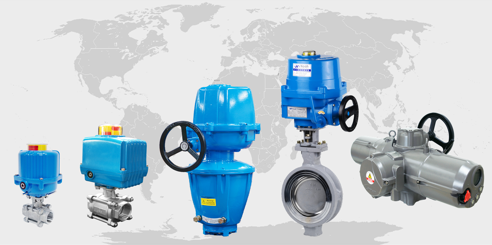

We specialize in manufacturing electric actuators.
We have made collaborative efforts with expertise and continuous investment in R&D to be the world's best in the market. We promise to supply reliable products and dependable service and support.
Noah actuators are supplied in buildings, plants, steelworks, and power plants in over 30 countries.
We develop actuators engineered to provide high quality and high performance at an economical cost. Here at Noah Valve Actuation, Inc., we are focused on ensuring the best service and support to our clients in North America. We are the sole supplier of all Noah actuators in the United States and have distributors across the country.
Quality
Supplying the best quality electric actuators with high technology and high performance.
Reliable
Durable, dependable, and powerful actuators with several standard features and special options.
Service
Committed to providing good service and support to all of our clients around the world.
Product Line
Variety of products from quarter-turn, linear, spring-return, and multi-turn electric actuators.
SA Series
Small size quarter-turn actuators designed for valves, dampers, and automation of rotary machines.
NA Series
Larger size quarter-turn actuators designed for valves, dampers, and automation of rotary machines.
SR Series
Spring-return actuators with fail-close/fail-open operation designed for emergency situations.
MA Series
Newest addition to the product line is the multi-turn actuator series with electronic torque sensors.
SL & NL Series
Small and large sized linear actuators best fit for a variety of applications.
Pneumatic Series
Our Pneumatic actuators come in two varieties of Scotch York type and Rack & Pinion Type.